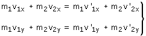

Choque oblicuo | Explosiones
Como los vectores no están todos alineados habrá que trabajar con sus dos componentes. Método Se aplica el principio de conservación del momento lineal 
Trucos Conviene tomar uno de los ejes coincidiendo con la dirección de una velocidad conocida Es mejor dejar como incógnita una componente de velocidad (vx) que expresarla como v·cos α cuando no se conoce α Hay problemas donde basta con plantear la conservación del momento lineal para poder obtener las incógnitas. Si fueran necesarias mas ecuaciones habría que acudir al balance de energía cinética antes y después del choque |